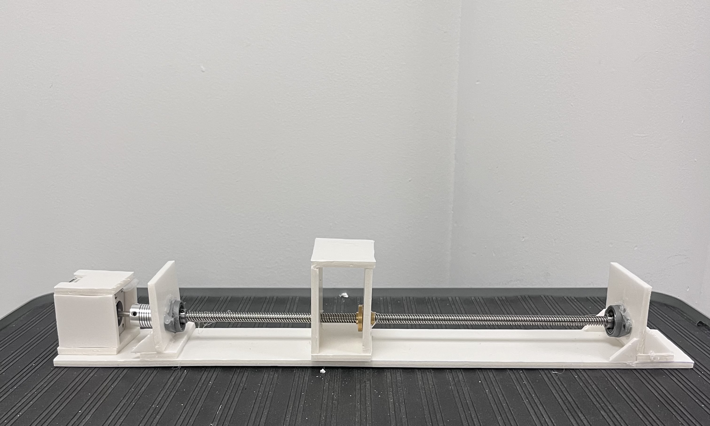

The goal of this project was to make a device with three degrees of freedom that would solve some real world problems. Our group decided to design an automatic pipetter that would be able to dispense liquid quickly and accurately into a 96 well PCR plate. This process is usually done by hand and is long and often tedious. This device is an efficient and cheap solution to this problem.
Step 1: One liner stage:
The first step was to create a linear stage capable of moving a small cart in one dimension. To do this we built the frame out of foam and using a stepper motor a lead screw we built the protype below.

Step 2: Three linear stages working together
The next step was to work with two other teams to bring three linear stages together to achieve 3 degrees of freedom. By stacking one linear stage on top of two others and using another stepper motor to control vertaical movment we were able to build a devce that could draw shapes on a piece of paper. Each stage was controlled using G-code.
Step 3: Design
After getting some expereince with the stepper motors and g-code form the drawing device we started desgining for our automatic pipetter. While my other teamate took the lead on desining the linear stages, I started designing the mechanism that would hold the pipette itself. For this project we were using a Femto scientific p10 pipette. I started by desining a plate that could hold the pipette and allow it to move up and down. I added a rack and pinion mechanism at the top which would push the button. I then added a rack to the back of the plate so that another stepper motor could move the plate vertically. Below are images of my Solidworks assembly.
Step 4: Code
In order to automate this process effectively we needed to generate all of the g-code commands. Since each pipetting into each well requires 13 unique motor commands, rather then writting each command by hand I wrote a python script that could generate all of the commands and write them to a g-code file that we could then use to operate the device using repetier host(a 3D printer software app). Using the python script allowed us to easily and quickly make modifications to what ended up being thousands of commands. You can downlad our phython script below.
Testing
The final step in this project was to put everything together and test it. After running many tests and adjusting the PID values, we were able to get the car to work consistently at a max acceleration of 18 in/s². Despite not being our theoretical maximum, we found that this was the best balance of speed and repeatability, which was crucial for this project.